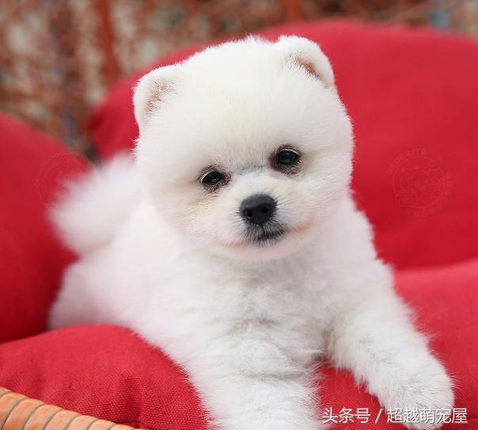
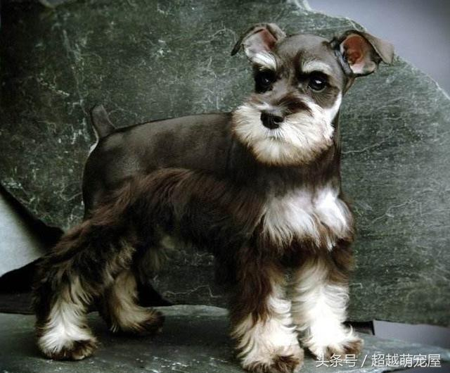
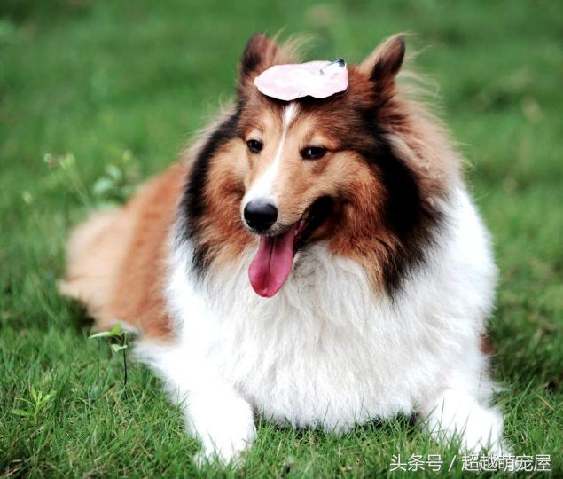
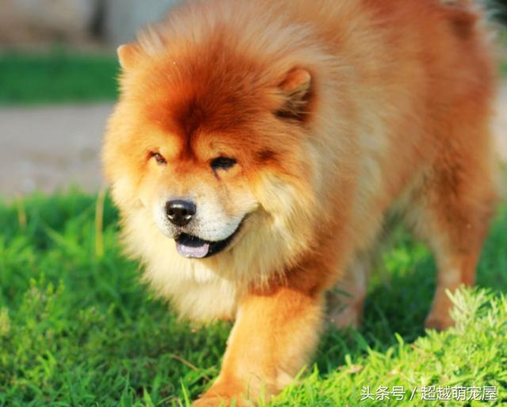
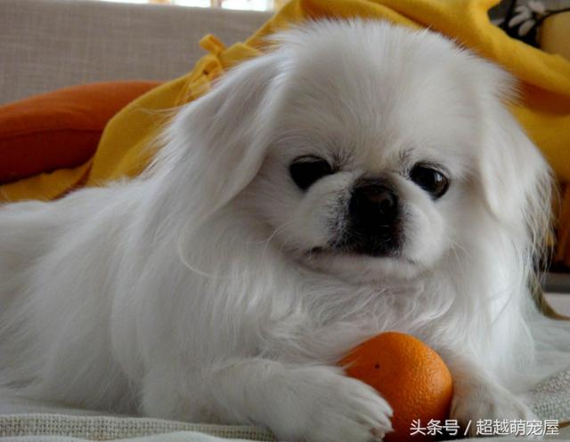

英文名： pomeranian
類型： 小型犬
分類：絨毛犬 伴侶犬 看家犬
特點：健康且開朗，有個性，活力充沛。集中最受人矚目的是其忠實，友善的個性。雖屬於小型犬種，但遇到突髮狀況會展現勇敢、兇悍的一面。博美犬必須定期整理，不適合於生活忙碌的人士飼養。華麗的被毛，不僅需要經常修剪，還需每日細心的梳理。因體毛豐厚，換毛期脫毛量大，應經常保潔護理，每周兩次洗澡為宜。母犬較易出現難產現象。博美犬活潑好動，應每日讓它在戶外運動或散步。適合室內飼養。
英文名：miniature schnauzerterrier
類型：小型犬
分類：梗類犬 伴侶犬 捕鼠犬
典型的迷你雪納瑞聰明，活潑，順從，機警，勇敢，服從命令。它很友好，聰明，樂於取悅主人，體格強健，精力充沛，忠誠可信； 迷你雪納瑞犬喜歡運動和玩耍，應定時進行戶外運動。每天應梳理被毛，春秋季節應修剪被毛。耳朵、頰部和頭部的毛要適當剪短，以保持被毛清潔和美觀。
英文名： rough collie
類型： 大型犬
分類：牧羊犬 工作犬 畜牧與守衛犬
特點：該犬極有智慧，性格優良，平易近人，聰明敏感，對溫和的服從訓練反應良好，友善，願意取悅主人，適合於細心的小孩。性格開朗活潑，感受力強。如果沒有適當的社會化經驗，可能會害羞或緊張，和其他寵物相處融洽，但可能會追趕較小的動物。最適合做機警的看門狗。在室外活力充沛，對主人富有感情，對生人警戒心強，有很好的護本領，是目前世界上最受歡迎的犬種之一。
英文名： chow chow
類型： 中型犬
分類：絨毛犬 伴侶犬 工作犬
特點：松獅犬十分文靜，性格高雅，從不搞破壞。它們是最易容學會如廁的犬種。但松獅犬的性格很獨特，它們很像貓，非常自我，獨立、固執。別以為它那副融融的熊人毛會是很好抱的，它們通常都會令你失望因為它們不太喜歡給人逗著玩的。性格聰明但不容易教，因為它們本性不是取悅主人，它們自我為中心的性格不能用一般的馴狗手法。它們不會為體罰而妥協，更加不會做自己不想做的事情。它們的喜惡是隨著自己的情緒，不理會別人或其他動物，是一種極之傲慢和有性格的犬種。它們往往會被誤為一種十分野性及有攻擊性的動物。而事實上，它們不喜歡陌生人和十分地盤主義，只要在它的地域上，它會保衛所有的東西，它們也會對陌生人表現出十分不友善。所以松獅犬需要一個堅強而又固執的主人。
英文名： pekingese
類型： 小型犬
分類：伴侶犬 比賽犬古老犬
特點：性格：北京犬氣質高貴、聰慧、機靈、勇敢、倔強，性情溫順可愛，有個性，表現欲強。他代表的勇氣、大膽、自尊更勝於漂亮、優雅或精緻。對主人極有感情，對陌生人則置猜疑。